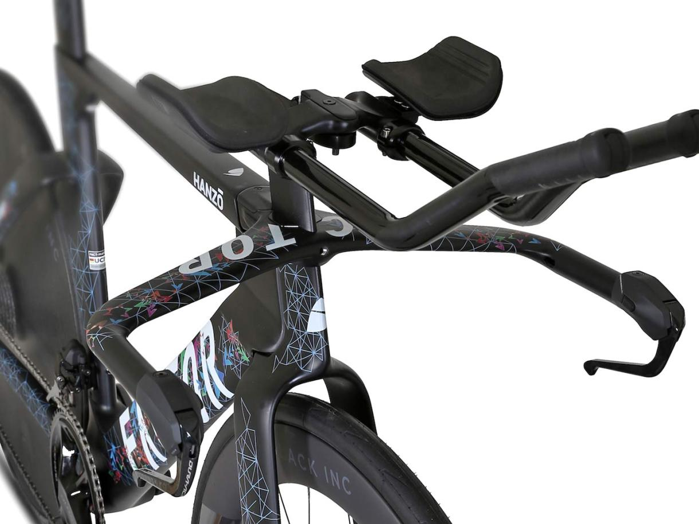
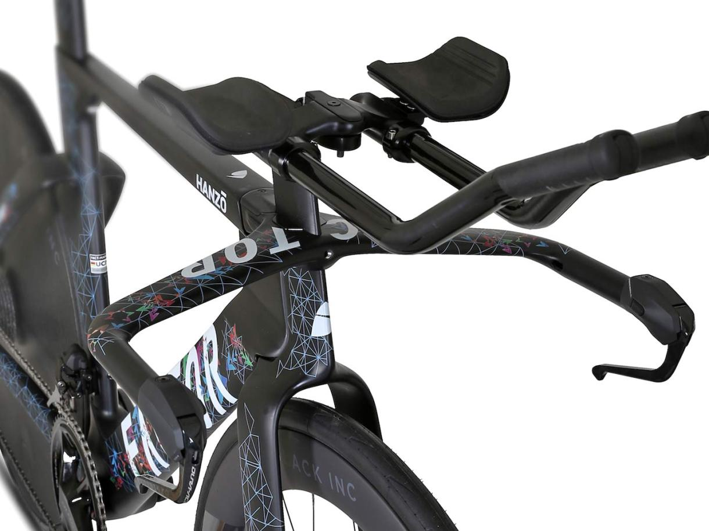

로드 자전거 대비 앞쪽으로 좀 더 치우쳐진 안장과 바람을 효율적으로 주파할 수 있도록 개발된 TT핸들바와 납작한 프레임,
휠 두께가 높은 에어로 휠 또는 스포크 부분을 막아 에어로 성능을 극대화 한 디스크 휠까지. 통상적으로 다루는 로드 자전거의
범주에서 TT차보다 빠른 장르는 없을 것 입니다.
또한 자세를 최대한 유지할 수 있도록 도우며, 공기저항을 최소화 할 수 있도록 돕는 드래프트 박스와 워터보틀이
장거리 라이딩에도 최상의 기록을 내 도록 당신을 서포트 할 것 입니다.
 
드래프트 박스와 TT 핸들바
트라이애슬론 자전거를 추천하는 타입 :
철인 3종경기를 해 볼 의향이 있는 라이더
ITT(평지독주), TTT(팀 타임트라이얼)에 관심이 있는 라이더
간지나고 비싸보이는 자전거를 타고 싶은 라이더